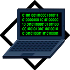

Системы счисления
И так, начнем с формулировок
Система счисления — это способ записи (представления) чисел. Она даёт каждому числу уникальное представление; отражает алгебраическую и арифметическую структуру чисел.
Системы счисления подразделяются на позиционные и непозиционные, а позиционные, в свою очередь, — на однородные и смешанные.
Непозиционная — самая древняя, в ней каждая цифра числа имеет величину, не зависящую от её позиции (разряда). То есть, если у вас 5 черточек — то число тоже равно 5, поскольку каждой черточке, независимо от её места в строке, соответствует всего 1 один предмет.
Позиционная система — значение каждой цифры зависит от её позиции (разряда) в числе. Например, привычная для нас 10-я система счисления — позиционная. Рассмотрим число 453. Цифра 4 обозначает количество сотен и соответствует числу 400, 5 — кол-во десяток и аналогично значению 50, а 3 — единиц и значению 3. Как видим — чем больше разряд — тем значение выше. Итоговое число можно представить, как сумму 400+50+3=453.
Однородная система — для всех разрядов (позиций) числа набор допустимых символов (цифр) одинаков. В качестве примера возьмем упоминавшуюся ранее 10-ю систему. При записи числа в однородной 10-й системе вы можете использовать в каждом разряде исключительно одну цифру от 0 до 9, таким образом, допускается число 450 (1-й разряд — 0, 2-й — 5, 3-й — 4), а 4F5 — нет, поскольку символ F не входит в набор цифр от 0 до 9.
Смешанная система — в каждом разряде (позиции) числа набор допустимых символов (цифр) может отличаться от наборов других разрядов. Яркий пример — система измерения времени. В разряде секунд и минут возможно 60 различных символов (от «00» до «59»), в разряде часов – 24 разных символа (от «00» до «23»), в разряде суток – 365 и т. д.
Системы счисления подразделяются на позиционные и непозиционные, а позиционные, в свою очередь, — на однородные и смешанные.
Непозиционная — самая древняя, в ней каждая цифра числа имеет величину, не зависящую от её позиции (разряда). То есть, если у вас 5 черточек — то число тоже равно 5, поскольку каждой черточке, независимо от её места в строке, соответствует всего 1 один предмет.
Позиционная система — значение каждой цифры зависит от её позиции (разряда) в числе. Например, привычная для нас 10-я система счисления — позиционная. Рассмотрим число 453. Цифра 4 обозначает количество сотен и соответствует числу 400, 5 — кол-во десяток и аналогично значению 50, а 3 — единиц и значению 3. Как видим — чем больше разряд — тем значение выше. Итоговое число можно представить, как сумму 400+50+3=453.
Однородная система — для всех разрядов (позиций) числа набор допустимых символов (цифр) одинаков. В качестве примера возьмем упоминавшуюся ранее 10-ю систему. При записи числа в однородной 10-й системе вы можете использовать в каждом разряде исключительно одну цифру от 0 до 9, таким образом, допускается число 450 (1-й разряд — 0, 2-й — 5, 3-й — 4), а 4F5 — нет, поскольку символ F не входит в набор цифр от 0 до 9.
Смешанная система — в каждом разряде (позиции) числа набор допустимых символов (цифр) может отличаться от наборов других разрядов. Яркий пример — система измерения времени. В разряде секунд и минут возможно 60 различных символов (от «00» до «59»), в разряде часов – 24 разных символа (от «00» до «23»), в разряде суток – 365 и т. д.
Десятичная система счисления
Это одна из самых распространенных систем счисления. Именно её мы используем, когда называем цену товара и произносим номер автобуса. В каждом разряде (позиции) может использоваться только одна цифра из диапазона от 0 до 9. Основанием системы является число 10.
Для примера возьмем число 503. Если бы это число было записано в непозиционной системе, то его значение равнялось 5+0+3 = 8. Но у нас — позиционная система и значит каждую цифру числа необходимо умножить на основание системы, в данном случае число “10”, возведенное в степень, равную номеру разряда. Получается, значение равно 5*10 2 + 0*101 + 3*100 = 500+0+3 = 503. Чтобы избежать путаницы при одновременной работе с несколькими системами счисления основание указывается в качестве нижнего индекса. Таким образом, 503 = 50310.
Помимо десятичной системы, отдельного внимания заслуживают 2-, 8-, 16-ая системы.
Для примера возьмем число 503. Если бы это число было записано в непозиционной системе, то его значение равнялось 5+0+3 = 8. Но у нас — позиционная система и значит каждую цифру числа необходимо умножить на основание системы, в данном случае число “10”, возведенное в степень, равную номеру разряда. Получается, значение равно 5*10 2 + 0*101 + 3*100 = 500+0+3 = 503. Чтобы избежать путаницы при одновременной работе с несколькими системами счисления основание указывается в качестве нижнего индекса. Таким образом, 503 = 50310.
Помимо десятичной системы, отдельного внимания заслуживают 2-, 8-, 16-ая системы.
Двоичная система счисления
Эта система, в основном, используется в вычислительной технике. Почему не стали использовать привычную нам 10-ю? Первую вычислительную машину создал Блез Паскаль, использовавший в ней десятичную систему, которая оказалась неудобной в современных электронных машинах, поскольку требовалось производство устройств, способных работать в 10 состояниях, что увеличивало их цену и итоговые размеры машины. Этих недостатков лишены элементы, работающие в 2-ой системе. Тем не менее, рассматриваемая система была создана за долго до изобретения вычислительных машин и уходит “корнями” в цивилизацию Инков, где использовались кипу — сложные верёвочные сплетения и узелки.
Двоичная позиционная система счисления имеет основание 2 и использует для записи числа 2 символа (цифры): 0 и 1. В каждом разряде допустима только одна цифра — либо 0, либо 1.
Примером может служить число 101. Оно аналогично числу 5 в десятичной системе счисления. Для того, чтобы перевести из 2-й в 10-ю необходимо умножить каждую цифру двоичного числа на основание “2”, возведенное в степень, равную разряду. Таким образом, число 1012 = 1*22 + 0*21 + 1*20 = 4+0+1 = 510.
Хорошо, для машин 2-я система счисления удобнее, но мы ведь часто видим, используем на компьютере числа в 10-й системе. Как же тогда машина определяет какую цифру вводит пользователь? Как переводит число из одной системы в другую, ведь в её распоряжении всего 2 символа — 0 и 1?
Чтобы компьютер мог работать с двоичными числами (кодами), необходимо чтобы они где-то хранились. Для хранения каждой отдельной цифры применяется триггер, представляющий собой электронную схему. Он может находится в 2-х состояниях, одно из которых соответствует нулю, другое — единице. Для запоминания отдельного числа используется регистр — группа триггеров, число которых соответствует количеству разрядов в двоичном числе. А совокупность регистров — это оперативная память. Число, содержащееся в регистре — машинное слово. Арифметические и логические операции со словами осуществляет арифметико-логическое устройство (АЛУ). Для упрощения доступа к регистрам их нумеруют. Номер называется адресом регистра. Например, если необходимо сложить 2 числа — достаточно указать номера ячеек (регистров), в которых они находятся, а не сами числа. Адреса записываются в 8- и 16-ричной системах (о них будет рассказано ниже), поскольку переход от них к двоичной системе и обратно осуществляется достаточно просто. Для перевода из 2-й в 8-ю число необходимо разбить на группы по 3 разряда справа налево, а для перехода к 16-ой — по 4. Если в крайней левой группе цифр не достает разрядов, то они заполняются слева нулями, которые называются ведущими. В качестве примера возьмем число 1011002. В восьмеричной — это 101 100 = 548, а в шестнадцатеричной — 0010 1100 = 2С16. Отлично, но почему на экране мы видим десятичные числа и буквы? При нажатии на клавишу в компьютер передаётся определённая последовательность электрических импульсов, причём каждому символу соответствует своя последовательность электрических импульсов (нулей и единиц). Программа драйвер клавиатуры и экрана обращается к кодовой таблице символов (например, Unicode, позволяющая закодировать 65536 символов), определяет какому символу соответствует полученный код и отображает его на экране. Таким образом, тексты и числа хранятся в памяти компьютера в двоичном коде, а программным способом преобразуются в изображения на экране.
Двоичная позиционная система счисления имеет основание 2 и использует для записи числа 2 символа (цифры): 0 и 1. В каждом разряде допустима только одна цифра — либо 0, либо 1.
Примером может служить число 101. Оно аналогично числу 5 в десятичной системе счисления. Для того, чтобы перевести из 2-й в 10-ю необходимо умножить каждую цифру двоичного числа на основание “2”, возведенное в степень, равную разряду. Таким образом, число 1012 = 1*22 + 0*21 + 1*20 = 4+0+1 = 510.
Хорошо, для машин 2-я система счисления удобнее, но мы ведь часто видим, используем на компьютере числа в 10-й системе. Как же тогда машина определяет какую цифру вводит пользователь? Как переводит число из одной системы в другую, ведь в её распоряжении всего 2 символа — 0 и 1?
Чтобы компьютер мог работать с двоичными числами (кодами), необходимо чтобы они где-то хранились. Для хранения каждой отдельной цифры применяется триггер, представляющий собой электронную схему. Он может находится в 2-х состояниях, одно из которых соответствует нулю, другое — единице. Для запоминания отдельного числа используется регистр — группа триггеров, число которых соответствует количеству разрядов в двоичном числе. А совокупность регистров — это оперативная память. Число, содержащееся в регистре — машинное слово. Арифметические и логические операции со словами осуществляет арифметико-логическое устройство (АЛУ). Для упрощения доступа к регистрам их нумеруют. Номер называется адресом регистра. Например, если необходимо сложить 2 числа — достаточно указать номера ячеек (регистров), в которых они находятся, а не сами числа. Адреса записываются в 8- и 16-ричной системах (о них будет рассказано ниже), поскольку переход от них к двоичной системе и обратно осуществляется достаточно просто. Для перевода из 2-й в 8-ю число необходимо разбить на группы по 3 разряда справа налево, а для перехода к 16-ой — по 4. Если в крайней левой группе цифр не достает разрядов, то они заполняются слева нулями, которые называются ведущими. В качестве примера возьмем число 1011002. В восьмеричной — это 101 100 = 548, а в шестнадцатеричной — 0010 1100 = 2С16. Отлично, но почему на экране мы видим десятичные числа и буквы? При нажатии на клавишу в компьютер передаётся определённая последовательность электрических импульсов, причём каждому символу соответствует своя последовательность электрических импульсов (нулей и единиц). Программа драйвер клавиатуры и экрана обращается к кодовой таблице символов (например, Unicode, позволяющая закодировать 65536 символов), определяет какому символу соответствует полученный код и отображает его на экране. Таким образом, тексты и числа хранятся в памяти компьютера в двоичном коде, а программным способом преобразуются в изображения на экране.
Восьмеричная система счисления
8-я система счисления, как и двоичная, часто применяется в цифровой технике. Имеет основание 8 и использует для записи числа цифры от 0 до 7.
Пример восьмеричного числа: 254. Для перевода в 10-ю систему необходимо каждый разряд исходного числа умножить на 8n, где n — это номер разряда. Получается, что 2548 = 2*82 + 5*81 + 4*80 = 128+40+4 = 17210.
Пример восьмеричного числа: 254. Для перевода в 10-ю систему необходимо каждый разряд исходного числа умножить на 8n, где n — это номер разряда. Получается, что 2548 = 2*82 + 5*81 + 4*80 = 128+40+4 = 17210.
Шестнадцатеричная система счисления
Шестнадцатеричная система широко используется в современных компьютерах, например при помощи неё указывается цвет: #FFFFFF — белый цвет. Рассматриваемая система имеет основание 16 и использует для записи числа: 0, 1, 2, 3, 4, 5, 6, 7, 8, 9, A, B. C, D, E, F, где буквы равны 10, 11, 12, 13, 14, 15 соответственно.
В качестве примера возьмем число 4F516. Для перевода в восьмеричную систему — сначала преобразуем шестнадцатеричное число в двоичное, а затем, разбив на группы по 3 разряда, в восьмеричное. Чтобы преобразовать число в 2-е необходимо каждую цифру представить в виде 4-х разрядного двоичного числа. 4F516 = (100 1111 101)2. Но в 1 и 3 группах не достает разряда, поэтому заполним каждый ведущими нулями: 0100 1111 0101. Теперь необходимо разделить полученное число на группы по 3 цифры справа налево: 0100 1111 0101 = 010 011 110 101. Переведем каждую двоичную группу в восьмеричную систему, умножив каждый разряд на 2n, где n — номер разряда: (0*22+1*21+0*20) (0*22+1*21+1*20) (1*22+1*21+0*20) (1*22+0*21+1*20) = 23658.
Помимо рассмотренных позиционных систем счисления, существуют и другие, например:
Иногда требуется преобразовать число из одной системы счисления в другую, поэтому рассмотрим способы перевода между различными системами.
В качестве примера возьмем число 4F516. Для перевода в восьмеричную систему — сначала преобразуем шестнадцатеричное число в двоичное, а затем, разбив на группы по 3 разряда, в восьмеричное. Чтобы преобразовать число в 2-е необходимо каждую цифру представить в виде 4-х разрядного двоичного числа. 4F516 = (100 1111 101)2. Но в 1 и 3 группах не достает разряда, поэтому заполним каждый ведущими нулями: 0100 1111 0101. Теперь необходимо разделить полученное число на группы по 3 цифры справа налево: 0100 1111 0101 = 010 011 110 101. Переведем каждую двоичную группу в восьмеричную систему, умножив каждый разряд на 2n, где n — номер разряда: (0*22+1*21+0*20) (0*22+1*21+1*20) (1*22+1*21+0*20) (1*22+0*21+1*20) = 23658.
Помимо рассмотренных позиционных систем счисления, существуют и другие, например:
1) Троичная
2) Четверичная
3) Двенадцатеричная
2) Четверичная
3) Двенадцатеричная
Иногда требуется преобразовать число из одной системы счисления в другую, поэтому рассмотрим способы перевода между различными системами.
Преобразование в десятичную систему счисления
Имеется число a1 a2 a3 в системе счисления с основанием b. Для перевода в 10-ю систему необходимо каждый разряд числа умножить на bn, где n — номер разряда. Таким образом, (a1a2a3)b = (a1*b2 + a2*b1 + a3*b0)10.
Пример: 1012 = 1*22 + 0*21 + 1*20 = 4+0+1 = 510
Пример: 1012 = 1*22 + 0*21 + 1*20 = 4+0+1 = 510
Преобразование из десятичной системы счисления в другие
Целая часть:
Дробная часть:
Пример: переведем 1510 в восьмеричную:
15\8 = 1, остаток 7
1\8 = 0, остаток 1
Записав все остатки снизу вверх, получаем итоговое число 17. Следовательно, 1510 = 178.
1. Последовательно делим целую часть десятичного числа на основание системы, в которую переводим, пока десятичное число не станет равно нулю.
2. Полученные при делении остатки являются цифрами искомого числа. Число в новой системе записывают, начиная с последнего остатка.
2. Полученные при делении остатки являются цифрами искомого числа. Число в новой системе записывают, начиная с последнего остатка.
Дробная часть:
1. Дробную часть десятичного числа умножаем на основание системы, в которую требуется перевести. Отделяем целую часть. Продолжаем умножать дробную часть на основание новой системы, пока она не станет равной 0.
2. Число в новой системе составляют целые части результатов умножения в порядке, соответствующем их получению.
2. Число в новой системе составляют целые части результатов умножения в порядке, соответствующем их получению.
Пример: переведем 1510 в восьмеричную:
15\8 = 1, остаток 7
1\8 = 0, остаток 1
Записав все остатки снизу вверх, получаем итоговое число 17. Следовательно, 1510 = 178.
Преобразование из двоичной в восьмеричную и шестнадцатеричную системы
Для перевода в восьмеричную — разбиваем двоичное число на группы по 3 цифры справа налево, а недостающие крайние разряды заполняем ведущими нулями. Далее преобразуем каждую группу, умножая последовательно разряды на 2 n, где n — номер разряда.
В качестве примера возьмем число 10012: 10012 = 001 001 = (0*22 + 0*21 + 1*20) (0*22 + 0*21 + 1*20) = (0+0+1) (0+0+1) = 118
Для перевода в шестнадцатеричную — разбиваем двоичное число на группы по 4 цифры справа налево, затем — аналогично преобразованию из 2-й в 8-ю.
В качестве примера возьмем число 10012: 10012 = 001 001 = (0*22 + 0*21 + 1*20) (0*22 + 0*21 + 1*20) = (0+0+1) (0+0+1) = 118
Для перевода в шестнадцатеричную — разбиваем двоичное число на группы по 4 цифры справа налево, затем — аналогично преобразованию из 2-й в 8-ю.
Преобразование из восьмеричной и шестнадцатеричной систем в двоичную
Перевод из восьмеричной в двоичную — преобразуем каждый разряд восьмеричного числа в двоичное 3-х разрядное число делением на 2 (более подробно о делении см. выше пункт “Преобразование из десятичной системы счисления в другие”), недостающие крайние разряды заполним ведущими нулями.
Для примера рассмотрим число 458: 45 = (100) (101) = 1001012
Перевод из 16-ой в 2-ю — преобразуем каждый разряд шестнадцатеричного числа в двоичное 4-х разрядное число делением на 2, недостающие крайние разряды заполняем ведущими нулями.
Преобразование дробной части любой системы счисления в десятичную
Преобразование осуществляется также, как и для целых частей, за исключением того, что цифры числа умножаются на основание в степени “-n”, где n начинается от 1.
Пример: 101,0112 = (1*22 + 0*21 + 1*20), (0*2-1 + 1*2-2 + 1*2-3) = (5), (0 + 0,25 + 0,125) = 5,37510
Для примера рассмотрим число 458: 45 = (100) (101) = 1001012
Перевод из 16-ой в 2-ю — преобразуем каждый разряд шестнадцатеричного числа в двоичное 4-х разрядное число делением на 2, недостающие крайние разряды заполняем ведущими нулями.
Преобразование дробной части любой системы счисления в десятичную
Преобразование осуществляется также, как и для целых частей, за исключением того, что цифры числа умножаются на основание в степени “-n”, где n начинается от 1.
Пример: 101,0112 = (1*22 + 0*21 + 1*20), (0*2-1 + 1*2-2 + 1*2-3) = (5), (0 + 0,25 + 0,125) = 5,37510
Преобразование дробной части двоичной системы в 8- и 16-ую
Перевод дробной части осуществляется также, как и для целых частей числа, за тем лишь исключением, что разбивка на группы по 3 и 4 цифры идёт вправо от десятичной запятой, недостающие разряды дополняются нулями справа.
Пример: 1001,012 = 001 001, 010 = (0*22 + 0*21 + 1*20) (0*22 + 0*21 + 1*20), (0*22 + 1*21 + 0*20) = (0+0+1) (0+0+1), (0+2+0) = 11,28
Пример: 1001,012 = 001 001, 010 = (0*22 + 0*21 + 1*20) (0*22 + 0*21 + 1*20), (0*22 + 1*21 + 0*20) = (0+0+1) (0+0+1), (0+2+0) = 11,28
Преобразование дробной части десятичной системы в любую другую
Для перевода дробной части числа в другие системы счисления нужно обратить целую часть в ноль и начать умножение получившегося числа на основание системы, в которую нужно перевести. Если в результате умножения будут снова появляться целые части, их нужно повторно обращать в ноль, предварительно запомнив (записав) значение получившейся целой части. Операция заканчивается, когда дробная часть полностью обратится в нуль.
Для примера переведем 10,62510 в двоичную систему:
0,625*2 = 1,25
0,250*2 = 0,5
0,5*2 = 1,0
Записав все остатки сверху вниз, получаем 10,62510 = (1010), (101) = 1010,1012
Для примера переведем 10,62510 в двоичную систему:
0,625*2 = 1,25
0,250*2 = 0,5
0,5*2 = 1,0
Записав все остатки сверху вниз, получаем 10,62510 = (1010), (101) = 1010,1012
 vkontakte
vkontakte